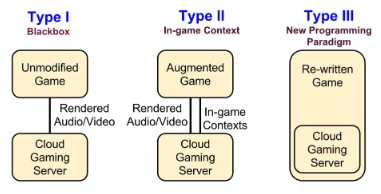

In the later part of the 2010s and early 2020s, cloud gaming technology is gaining traction and being actively researched and developed for the videogame industry. In this section, we are going to discuss its recent development as well as the benefits and dilemmas it might bring about for us in the near future.
Cloud gaming is the process of capturing the player inputs, sending them to the cloud where the output game scenes are rendered and sent back to the player as a video stream (Shirmohammadi, et al. [1]). With the advance of cloud computing technologies, well-known companies like Google and Microsoft are starting to invest in cloud gaming platforms: Stadia for Google and xCloud for Microsoft[2].
Cloud gaming itself is not a new concept. In the past two decades, various attempts at developing cloud gaming infrastructure were made with platforms like OnLive, Gaikai, and GeForce Now. Most of them has various successes but were ultimately hindered by the cloud technology of the time with the exception of GeForce Now being in active development since its inception and was launched as a commercial product to the public on February 4th of 2020[3]. Gaikai and OnLive were both acquired by Sony Interactive Entertainment in 2012 and 2015, respectively, signaling the gaming industry giant’s interest in cloud gaming development[4, 5].
According to Shea, et al. [6], cloud gaming faces two major challenges: latency and bandwidth. Latency negatively affects the player’s experience, as many genres of game such as first-person shooter, third-person shooter, real time strategy, etc., require little to no delay time between input and output to function correctly. On the other hand, limited bandwidth reduces the quality of the rendered images sent from the cloud back to the player, which is also a very important part of modern graphics-heavy games. Both of these are infrastructure-related and they have been getting easier and easier to overcome over the past years thanks to more and more advanced networking systems being developed and installed around the world, most notably is Space X’s Starlink project which aims to provide worldwide high-performance low-latency broadband internet connection by 2021[7].
As of 2020, cloud gaming is still predominantly using the “black box” model – “unmodified games run inside cloud gaming servers, and the rendered audio and video are captured, compressed, and streamed from these cloud gaming servers…[8]” – which still has a lot of drawbacks due to the closed source nature of only capturing graphical output. However, with the continuous advancement of global infrastructure, we can expect further developments for cloud gaming in the near future. In their paper, Cai, et al. [8] proposed that cloud gaming would undergo an evolution from the current black box architecture (type I) to more advanced type II and type III architecture, as demonstrated in Fig 1. They suspect that this development will bring about new programming paradigms specifically tailored for could gaming using highly advanced software development kits (SDKs) to further optimize user experience, lower development costs, and overcome infrastructure latency and bandwidth limitations.

Fig 1. Cloud gaming architectures (Cai, et al., 2016)
Cloud gaming could be a major driving force in shaping the near future of the videogame industry. Specifically, it would change the way videogames are distributed, as both physical and downloaded copies would become obsolete. This would in turn severely impact the market for console and high-end gaming PCs, since thin clients – low specification devices – would become more popular with the consumers as cloud gaming does not require high computing power on the client side. Furthermore, because of the nature of streamed content, we would have to deal with the problem of licensing: How would we define ownership of a game when the player does not have a physical or software copy? What will happen to the player’s games when their subscription to a cloud gaming service is no longer available? What would the pricing model be, and how would it be fair for both the players and developers?... Those are a few dilemmas that the gaming industry would have to face moving forward with cloud gaming technology.
On the other hand, cloud gaming would make gaming more accessible than ever before due to the reduced cost of gaming hardware. More and more people would have access to high-end games at lower prices. Software piracy would also be reduced since a streamed game cannot be pirated using traditional methods. This would be a major benefit for game developers and publishers, who would in turn further encourage the development of cloud gaming and the infrastructures that support it, thus creating new jobs in the gaming and communication industries.
At the end, physical and downloaded distribution will likely still going to stay with us as long as the dilemmas of cloud gaming are not addressed by the industry.
The development of cloud gaming will certainly change the way I enjoy the medium and support the game developers. I would likely still stick with downloaded copies for my favorite titles, and only use cloud gaming to try out new or hardware-demanding titles before deciding to buy a downloaded or physical copy of them. The same thing might be true for my family and friends, as they will have to adapt to a new cloud gaming driven economy.
Cloud gaming will create new job and investment opportunities for me working as an IT professional, but I would also have to learn and adapt to new technologies to stay current to the industry trends. It is hard to say what the future for my career in IT will be like with the development of cloud gaming, but it will undoubtedly be both challenging and exciting.